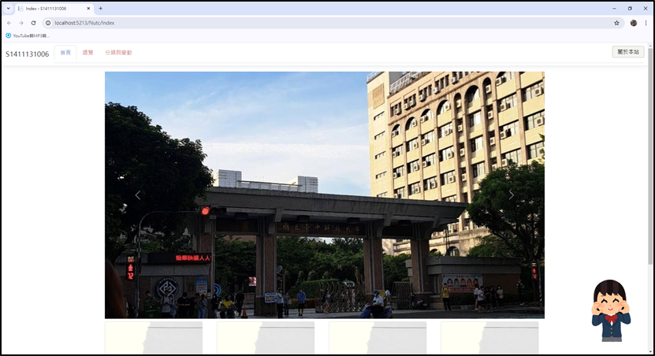
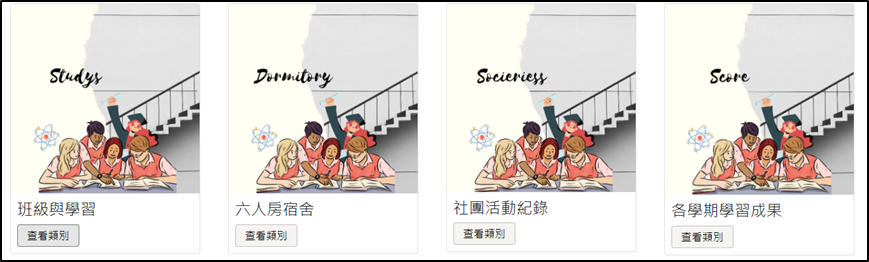
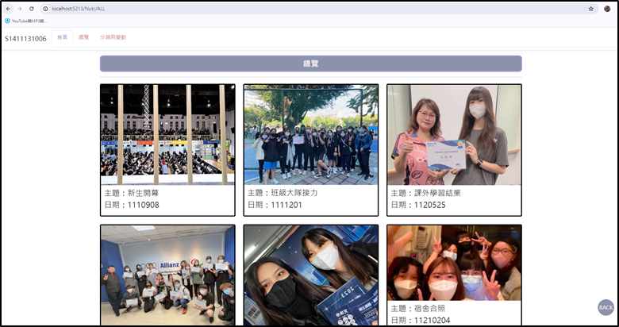
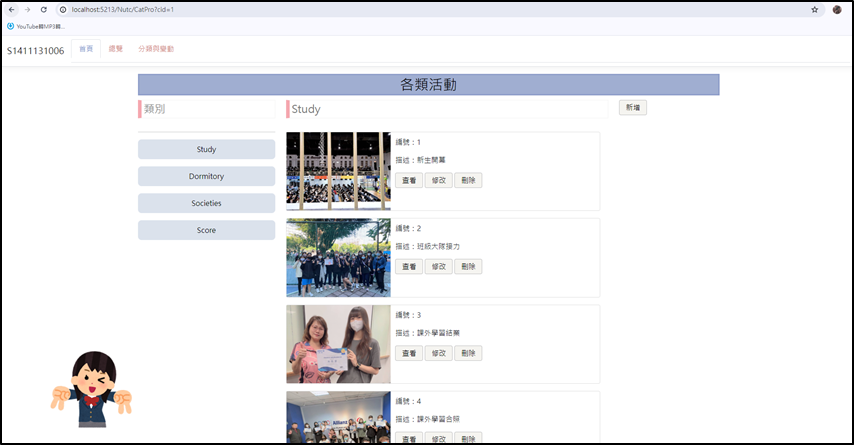

《Campus Diary｜校園生活日誌網站》
作品說明
Campus Diary 是一款個人化的校園生活記錄平台，整合學習歷程、社團參與、宿舍點滴與學期成果，打造出一個便於記錄與回顧的專屬空間。網站設計以視覺呈現與清晰分類為核心，提供流暢的操作體驗，協助使用者有系統地整理生活記憶、反思自我成長。
主要特色
- 視覺化介面設計：採用輪播圖、卡片式排版與插畫元素，提升閱讀互動與美觀性
- 直覺化操作流程：介面清楚易懂，支援快速新增、修改與查閱紀錄
- 自我成長工具：結合反思與規劃功能，讓使用者能定期檢視成長軌跡並設定個人目標
能力展現
- 展現資訊架構規劃、視覺呈現與使用者經驗思維
- 具備文書內容撰寫與前端排版邏輯能力
- 強化自我紀錄習慣與資料管理能力

首頁(偏向傳統部落格樣式)

特定景點（無分類）

首頁(偏向傳統部落格樣式)

特定景點（無分類）